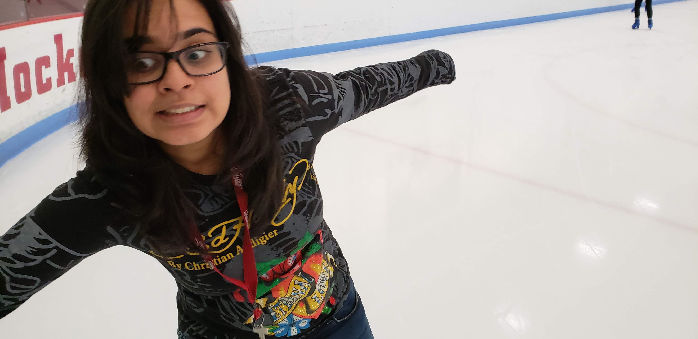

*record scratch*
*freeze frame*
You're probably wondering how I got here...

Many things helped me get to where I am today
- Education:
- High School: Pace Junior Science College, Navi-Mumbai, India (Grade- 89%)
- Middle School: Delhi Public School, Navi- Mumbai, India (Grade - 96%)
- Bachlors:- Bachelors in Computer Science, University Of Massachucetts, Amherst(GPA-3.9)
- Projects:
- I made a two player snake game: click here (Use the arrow keys for Player 1 and WASD for Player 2)
- Achievements:
- I participated in Dr. Homi Bhabha Balvaidnyanik, Engineering Talent Hunt competition and various Olympiad’s at middle & high school level.
- I was a active participant in the fund raising activities & campaigns of National Association for the Blind, India, for supporting requirement & need of blind people.We raised approximately . Rs 10000 for the organization.
- I generated funds by collecting newspapers in society, recycled them & used the funds to purchase books for needy children. Over the years we collected enough funds to pay for education of one child.
- I participated in national story writing competition conducted by KIIT International School. Was accorded Certificate for Commendable performance at Senior Category signed by Ruskin Bond, 2015
- Leadership:
- The previous leadership positions involved taking a homework session for the math class in my high school. The responsibilities involved going over homework for that day, reviewing exams and helping students with hard topics of the lecture. My role involved holding a class and making topic presentations for it in simplified version. I often had hold extra sessions during exams which was a bit stressful as I had to prepare for my own exams. I also used to collaborate with subject teacher and other students holding such sessions to ensure that the material and the examples were adequate.
- I also lead my school team for inter school chess competition. The competition was a three day event held in a different city. I was lead of my team and my main responsibilities included interacting with the event manager to ensure arrangement's for lodging, boarding and food, interacting with school management for transportation logistics. Other responsibility included ensuring all participants informed about schedule, timings for reporting & travel and emergency contacts.. As team lead i had to intervene and resolve conflicts for ensuring all participants worked harmoniously and work together as a team for achieving victory in the chess competition
- I along with my friends organized fundraiser Blind Association of India. It involved organizing awareness programs, interacting and talking to people one to one basis.